TadsPad User's Guide
by spaceflounder
Disclaimer: I take no reponsibility for any damage done by TadsPad to your project, computer or any other property. Use at your own risk.
Contents
Introduction
Welcome to TadsPad, an open-source IDE designed for the development of TADS3/adv3Lite Interactive Fiction. If you're reading this, you're likely eager to get to writing your own games. For the most part, if you can use any modern word processor, you can probably use TadsPad to make a TADS story with minimum duress.
The Quick Start section is designed to get you into programming with TadsPad right away, and is probably no more than most users will need.
Why build another IDE for TADS? First, while TADS Workbench is an excellent piece of software, it is MS-Windows only. Furthermore, there were a number of features I missed from other development packages, like code completion, spell checking, context help and editor themes. I also wanted tight integration to Eric Eve's fantastic adv3Lite, along with built-in TADS object browsing. And anyway, I wanted to write games on my Linux laptop, so TadsPad was to be implented in cross-platform Python 2.7.
What is not included in TadsPad? Most notably, Workbench users will note the lack of the debugger. I have no plans at the present time to add a debugger to this software, as the complicated plumbing required to do so would be an enormous job, and the current *nix TADS interpreters would need to be rewritten.
Requirements:
Python 2.7
wxPython 2.8 or higher
TADS 3.1 or higher (compiler and interpreter)
adv3Lite
A decently fast computer
Quick point about decently fast computers: TadsPad does some heavy calculations in the background for the code completion subsystem. Nearly all processors in use can handle the load, but it's worth bearing in mind. That said, I wrote a whole game on a 12-year-old Pentium III with Crunchbang Linux, and TadsPad held up fine.
wxPython is the required GUI toolkit. It is a mature and popular cross-platform widget kit, and has been used in other, similiar applications with success. In testing, however, I found that most Linux repo's contained old versions of wxPython. TadsPad will try to use whatever is installed, but some features will not work on anything under version 3.0, like correct coloring on triple quotes or brace highlighting.
TadsPad requires that adv3Lite is correctly installed in your user's Documents/TADS 3/extensions directory. If TadsPad cannot find adv3Lite, it will exit.
Quick Start
Assuming that all dependancies are met, TadsPad will load and show a Tip of the Day, like this:
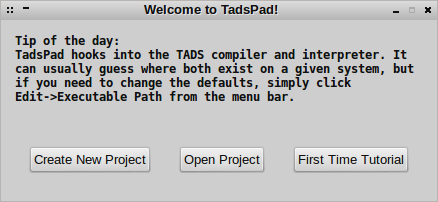
Click "Create New Project" to begin a new story. The New Project window will open, looking like this:
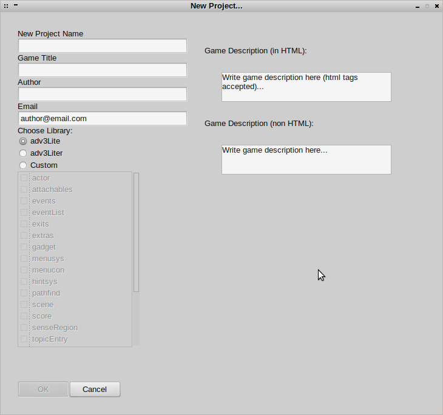
It may look a bit overwhelming, but creating a new project is actually very simple. The only required field on this window is the Project Name; everything else can be edited after the project is created, even the game title and description.
Go ahead and enter a project name. Note that the project name is not the same as the game title: the name is the literal filename the TADS compiler will generate when the story is built into a single TADS VM file. Hence, the project name should only contain alphanumeric characters, as punctuation marks or symbols will produce an invalid filename.
You can now fill the other fields as you like. Note the game title, author, email, html description and text description can all be changed by editing the versionInfo object contained in start.t, which will be generated after the project is created.
Below the email field you'll see you have the ability to choose the library you want to compile your project with. By default, the adv3Lite library is selected. You can also choose the adv3Liter library, which creates a streamlined world model suitable for simpler games (like those containing no actors or dialogue, for instance.)
Still further below is the option to build your own custom library. By default, all the standard adv3Lite files are included in the custom library setup, but you can include or exclude any combination of files or extensions you like. TadsPad searches the extensions path for new extensions on load, so if you've got a super cool new extension you've just downloaded (or built yourself) TadsPad can incorporate it and it will be built into the code completion database.
Caution: if you choose to build a custom library, not all combinations of source files will produce a working game. It is recommended that unless you know what you're doing, that you include all the default adv3Lite source files. For instance, the extension roomparts.t will NOT work without standard adv3Lite file extras.t.
If this is your first new project, you may choose to just go with the standard adv3Lite library, which is selected by default.
On the right side of the window you'll note the game description text boxes, one for html and one for straight Unicode text. It is recommended that you write the html version first. While you're typing, TadsPad will fill the standard text box with the text from the html box, save for whatever html tags and special tokens you may have used.
For instance, if you have typed:
This is my new project — made with TadsPad.
within the html box, in the text box it will appear as:
This is my new project made with TadsPad.
because the special html token — is removed.
For this User's Guide, I made a filled the entry fields like so:
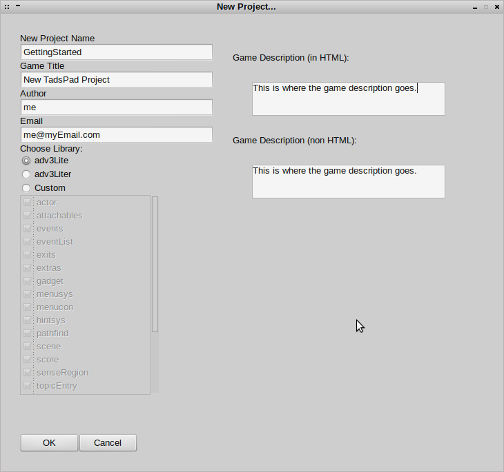
With all of your name project fields set to your liking, go ahead and click "Ok" to create your new project. TadsPad will now take a moment to scan your adv3Lite source files. This step is necessary as each library setup can be different — for instance, if you chose to use adv3Liter, it will produce a different set of source files to scan as opposed to the default adv3Lite. Primarily, this is so TadsPad can build the code completion database. While building library references, TadsPad will display a window that looks like this:
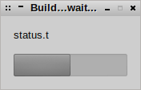
When the library references are built, TadsPad will finally appear onscreen:
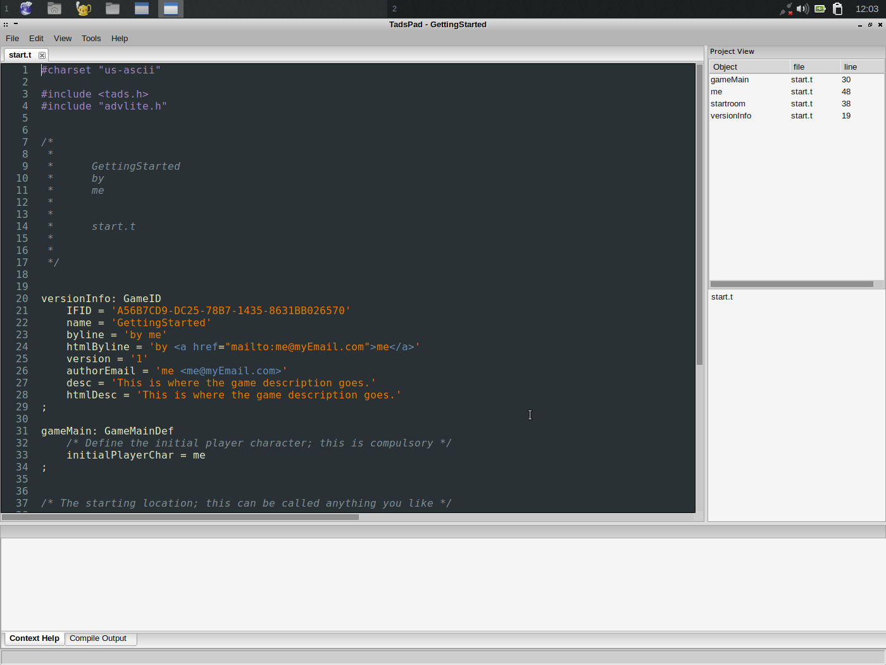
TadsPad will automatically create a directory for your project in the Documents/TADS 3 path. Presently, the project contains only a very simple single code file (start.t) and the project file used for compilation. As is, this project will compile successfully into an extremely simple game. You can play it by selecting Tools->Compile and Debug from the menu toolbar, or pressing the shortcut key F5.
Let's demonstrate how code completion works in TadsPad. Type the following code into the start.t file, on line 55 (at the end of the file):
++ lamp: Thing ''
Note that if you copy and paste the code above instead of typing it, you will not see the code completion engine work. As you type the keyword “Thing” TadsPad will suggest TAction then Thing as you type letter T then H. As you press the Enter key when you are done typing, TadsPad will automatically add a semicolon below your caret and indent, as it recognizes that you're creating a new object.
You might have noticed that there's nothing yet within the single quotes. There's not much use to a Thing object with no vocab property set, so let's put the following text between the quotes on line 55:
brass lantern;old rusty;lamp
Were this a real game, we'd probably make this object much more sophisticated, but this suits the purposes of a tutorial. While entering text between two single quotes or two double quotes, TadsPad is smart enough not to give suggestions from the code completion engine.
Press Ctrl+S to Save All unsaved files in this project. You can also Save All by selecting File->Save All from the menu toolbar. Each time the project is saved, TadsPad will re-scan for objects within your source code. On the right side of the screen in the Object Browser in the Project View control you should now see your new object, “lamp” along with the file it's in and the line number of the object.
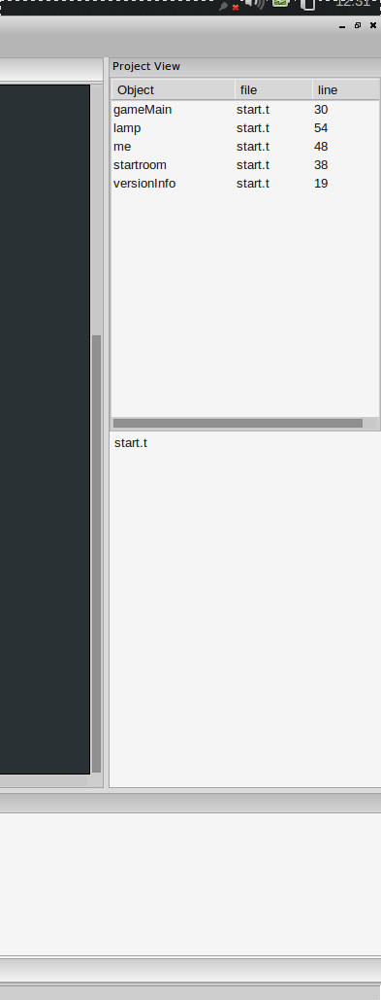
Press F5 and your test game will compile and run. You'll now see the brass lantern within your inventory while the game is running.
Returning to TadsPad, let's take a moment to check out the Context Help system. Using either the arrow keys or mouse cursor, position the caret over the word “Thing” on line 55; then, press the F1 key. On the bottom of the screen, the Context Help control should now look like this:
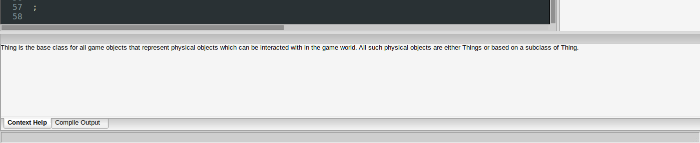
The Context Help text field will fill with the adv3Lite documention for the keyword the caret is on top of, in this case, Thing. For a more complicated example, move the caret to line 56, so we're now editing the lamp object.
Type the letters i, s, and m while the caret is editing lamp. You'll see that TadsPad suggests the property isMoveable. Go ahead and select isMoveable, and press F1. Now, the Context Help text reflects the help text for the isMoveable property of class Thing. Note that the help text is gathered from comments in adv3Lite's source code, not from the documentation text.
You might now choose to delete line 56, containing the isMoveable property, as we're finished with Context Help for now.
Of course, the Context Help is no substitute for an actual library reference, which most authors choose to have in the background while writing TADS code. Press F2 or select Help->Adv3Lite Bookshelf to access the complete adv3Lite documentation in your web browser. Note that most operating systems will not require that you have a web browser already opened before pressing F2.
After your game becomes fairly large, it becomes cumbersome to have to navigate the complete story geography or re-type the commands necessary to reach a certain point in the game you'd like to debug. This is where Transcript View Window is useful.
To demonstrate, press F5 to run your game again, and then type any sequence of commands you like. In this example, I entered:
jump
yell
examine me
attack
drop the lantern
q
y
The last two commands (q and y) exited the TADS interpreter. Having returned to TadsPad, press F6 or select Tools->View Transcript from the menu toolbar to open the Transcript View Window.
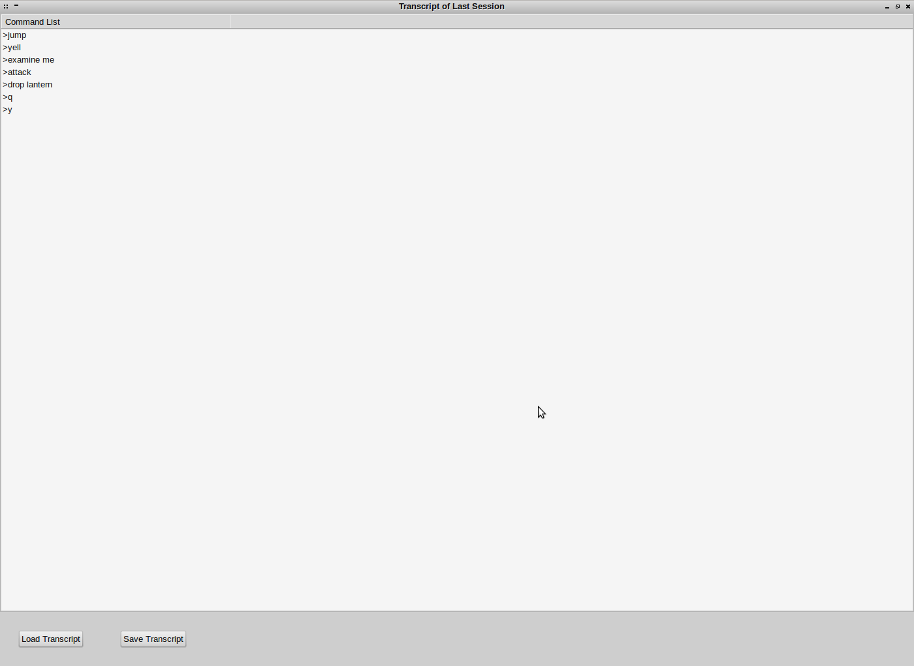
A complete set of commands entered in the last session on your game (including commands that didn't work in-game) are displayed onscreen. If you want to save a transcript for later, press the Save Transcript button to store those commands to file on disk. If you double-click one of the commands, the game will run and automatically enter all commands up through the one you've selected, bringing you to a certain point in the game. For instance, if you double-click the command “drop the lantern” you'll find the game runs and the in-game world now has the lantern on the ground instead of in the player's inventory.
Layout Overview
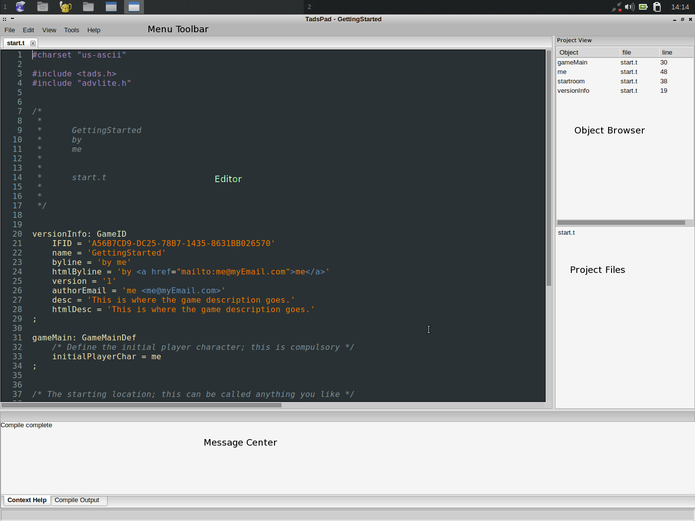
The Object Browser
On the right side of the screen on the standard TadsPad Window is the object browser. Every time you save the project, TadsPad will refresh the browser with all the objects in the project. If you'd like to go straight to a specfic object, double-click it in the object browser, and TadsPad will open the file with the object and display it in the editor.
Project Files
TadsPad maintains a complete list of the .t source files in your project. To view any one of them, double-click the file and you'll see it loaded in the editor.
Message Center
The Message Center is TadsPad's primary way of communicating with you, the author. If you use the Context Help (by putting the caret over a valid adv3Lite keyword and pressing F1) the Message Center will automatically select the Context Help tab and display the keyword help.
You can manually switch between the Compile Output and the Context Help and any time, by selecting them with the tabs on the bottom of the screen. The Compile Output is displayed automatically on game compile, to display messages from the TADS compiler. If there are any build errors, you can double-click the error in the Compile Output and view the offending line of code in the editor.
The Editor
If you've ever used Notepad, or most any other text editor, the editor component of TadsPad will seem very familiar. TadsPad harnesses the wxPython packged version of the venerable Scintilla, used also by TADS Workbench. As such, TadsPad will automatically syntax highlight TADS code for the convenience of the author.
Advanced Features
Spell Checking
If you happen to have an internet connection, TadsPad can use After the Deadline, a free spelling/grammer check web service, to scan your game for spelling mistakes. TadsPad will automatically extract all the strings in the opened tab in the editor and ship them off to AtD.
To use the Spell Check, press F7, or select Tools->Spell Check from the menu toolbar. If no errors remain, or AtD is down for some reason, no spell check window will appear. Otherwise, TadsPad will give you a choice of what you'd like to do with the given spelling error.
Reconfigure Library
In the event that you'd like to change what library sources your project uses, you can do that at any time by selecting Tools->Reconfigure Library from the menu toolbar.
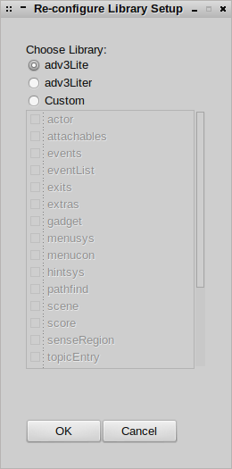
For instance, let's say you made a project with adv3Liter, and decided while working on the project that you really need the full adv3Lite. Open the Reconfigure Library Window and select adv3Lite (which is the default.) Click Ok and TadsPad will rebuild the library references. Note that the code completion database and the context help will rebuild as well.
Text Settings
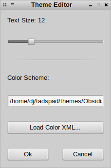
You can change the text size and color theme at any time by selecting Edit->Text Settings from the menu toolbar. To make the font larger, slide the size control to the right, or to the left for smaller text.
TadsPad will understand (most) standard XML Eclipse themes. TadsPad comes with a few, but you can download hundreds more from the internet. To change the theme, click Load Color Scheme on the Text Settings Window. A file selection dialog box will appear, and you can choose a new scheme.
Executable Paths
TadsPad needs to know where TADS 3 is installed for the purpose of compiling and running games. On *nix platforms, TadsPad will also need to know where to find a Terminal Emulator, like xterm. On first time load, TadsPad will make guesses as to where each of those pathes exist on the local system. If TadsPad is incorrect — like, for example, if you've got TADS installed in some really weird place — you can change the path and file where TadsPad will look.
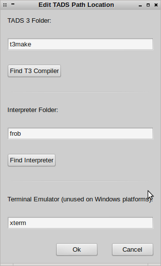
Select Edit->Executable Path from the menu toolbar. From here, you can change the TADS compiler, the TADS interpreter, or the Terminal Emulator. Note that on Windows systems the Terminal Emulator path is not used.
Caution: the Terminal Emulator you choose must use xterm style command executable switches, lest TadsPad crash whenever you try to compile and run and game.
Furthermore, on the *nix platforms, you MUST use frobtads (executable name is frob, which is the default) as QTads will not import transcripts.